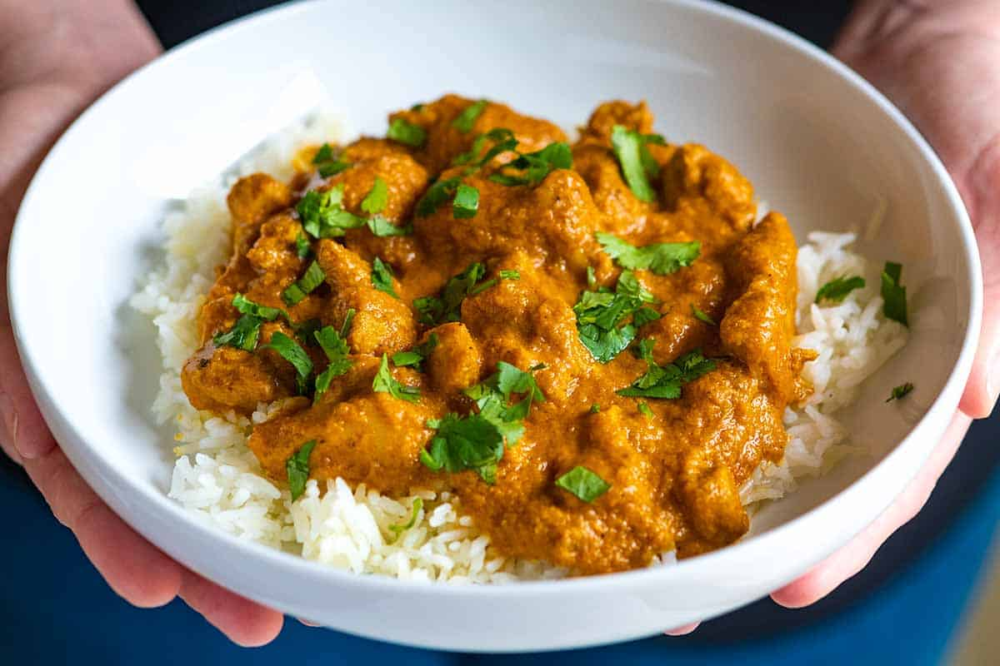

Chicken curry
Irresistible chicken curry in 30 minutes
Ingredients
- Coriander, cumin, turmeric, fennel seeds, cinnamon, pepper, ground mustard, ground cloves, cayenne pepper and salt – these spices build incredible flavor in this dish.
Together they create a homemade curry blend.
- Olive oil – used for sautéing.
- Fresh onion, garlic and ginger – these aromatics add a key depth of flavor.
- Canned tomatoes – fresh tomatoes will work here too but canned are quicker and easier.
- Chicken breasts – be careful not to over-cook so the chicken doesn’t become dry.
- Cornstarch – used to thicken the sauce slightly.
- Heavy cream – this makes the sauce deliciously rich and creamy.
Steps
- Mix spices together
- Saute onion, garlic and ginger in a skillet.
- Add broth and tomatoes, simmer.
- Blend mixture in a blender as directed then return to skillet.
- Season sauce then add chicken.
- Simmer chicken in sauce until cooked through.
- Add cornstarch slurry during last minute to thicken sauce.
- Stir in cream.
- Serve over rice garnished with cilantro.